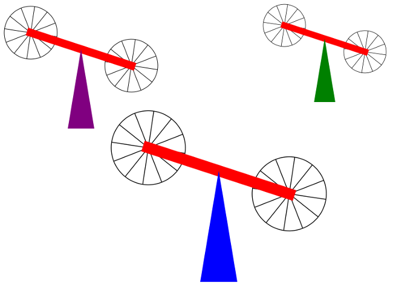
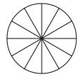
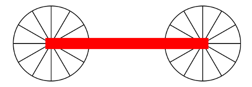

CS 424: Computer Graphics, Fall 2021
Lab 3: Hierarchical Modeling
Once again in this lab, you will be making picures by applying modeling transformations to basic shapes. But in this case, the modeling will be hierarchical. That is, you can have compound objects that are made from transformed simpler objects. Furthermore, some of the objects in this lab will animated by applying different modeling transformations in different frames.
The three files that you need are in the directory /classes/cs424/lab3-files, or you can get them through these links: you will need copies of the files SubroutineHierarchy.html, SceneGraph.html, and scene_graph_2d.js. The third file is a JavaScript file that defines the scene graph API that is used in SceneGraph.html. A <script> element in SceneGraph.html includes scene_graph_2d.js into that program. You will not make any changes to scene_graph_2d.js.
Both programs are set up to use a coordinate system with x ranging from -4 on the left to 4 on the right and y ranging from -3 at the bottom to 3 at the top. You can use a different coordinate system if you prefer. Just change the values of the constants X_LEFT, X_RIGHT, Y_TOP, and Y_BOTTOM.
There are three exercises for this lab. For the first exercise, you will work on SubroutineHierarchy.html, to create a specific animated scene. For the second exercise, you will work on SceneGraph.html to create the same scene. The third exercise asks you to create an animated hierarchical scene of your own design, using a copy of either SubroutineHierarcy.html or SceneGraph.html as your starting point.
Turning in your work: Your programs should be submitted by the beginning of the lab period next Thursday. They should be in a folder named lab3 or lab3-files inside your homework folder in /classes/cs424/homework. Please submit your the three .html files for the three exercises, along with a copy of scene_graph_2d.js to make it possible to run your scene graph work.
Exercise 1: Subroutine Hierarchy
For the first exercise, you will draw compound objects using subroutines. You should work on the file SubroutineHierarchy.html. The file already contains subroutines that draw certain basic shapes. You will need to write subroutines to draw the more complex objects that appear in the scene. The subroutines that you write can call the subroutines for drawing basic shapes, and they can call other subroutines that you have written. Here is the scene that you should create:

You need a subroutine to draw an object consisting of a triangle and a bar, with two wheels on the ends of the bar. The scene is made up of three copies of the object. When the animation is run, The wheels rotate about their center, while at the same time the bar is moving up and down like a seesaw. You will first want to create (with another subroutine) a wheel, consisting of a circle and some lines:

You can the build on that to create a bar with rotating wheels on its ends:

You can then build the main object and put copies of it in the scene. Keep in mind that you can test each of the subroutines as you write them, in order to make sure that they are working before you try to use them in a more complex object — just call the subroutine directly in drawWorld().
You will need to save and restore the graphics context's transform many times, using the functions graphics.save() and graphics.restore().)
One question is, how to implement a rotation that oscillates back and forth between two angles. You need to compute the angle from the value of frameNumber. Let's say your want one oscillation to last 100 time units. Note that frameNumber%100 will repeatedly go through values from 0 to 100. During the first half of a period, the angle should decrease; during the second half it should increase. Let's say that you want the angle to oscillate between -Math.PI/6 and +Math.PI/6. Then the angle can be computed as
let step = frameNumber % 100;
if (step > 50) {
step = 100 - step;
}
let angle = -Math.PI/6 + (step/50 * Math.PI/3);
The web page SubroutineHierarchyExample.html is the cart-and-windmill example that we looked at in class. It's the same scene as a demo in. Section 2.4, although the code isn't the same as the code in the demo. This is a much more complicated example of hierarchical modeling using subroutines, but you can look at the source code of the web page to review how it is done.
Exercise 2: Scene Graph
For the second exercise, you should make exactly the same animated scene as for the first exercise, but you should create it by building a scene graph to represent the contents of the scene. For this exercise, you should work on the file SceneGraph.html. The scene graph API that is used in this file is defined in scene_graph_2d.js, and you can refer to that file to see the available classes and methods. We discussed the API in class on Wednesday.
The web page SceneGraphExample.html is the cart-and-windmill example implemented using the scene graph API. Again, you can view the source code for that page to see how it's done. Also, there is the "people walking" example that we talked about in class on Wednesday here: Walkers.html.
Exercise 3: Complex Scene
As a final exercise, you should design and implement your own complex animated scene using hierarchical modeling. You can use either the subroutine or the scene graph approach. Start with a renamed copy of either SubroutineHierarchy.html or SceneGraph.html.
Your scene should include several different complex objects, and it should have multiple copies of at least one of those objects. At least one of the models must have moving parts (like the wheels on the cart or the vanes on the windmills.) Although I don't necessarily expect it to be as complex as the cart-and-windmills example, you should try for something as "realistic" as the cart-and-windmill example. If you can't think of anything else, how about a rotating ferris wheel, with rectangles or triangles for the seats. (Note that on a ferris wheel, the seats remain horizontal as the wheel turns.) Or you could make walking people. You could add some clouds drifting across the sky (made from a few filled circles that move around so the cloud changes shape). Maybe someone swinging in a swing? Or a sailboat that floats across a lake? A creepy house where blinds move up and down the window? Of course, there's always the possibility of a snowman — maybe his head could roll back and forth on his arms!